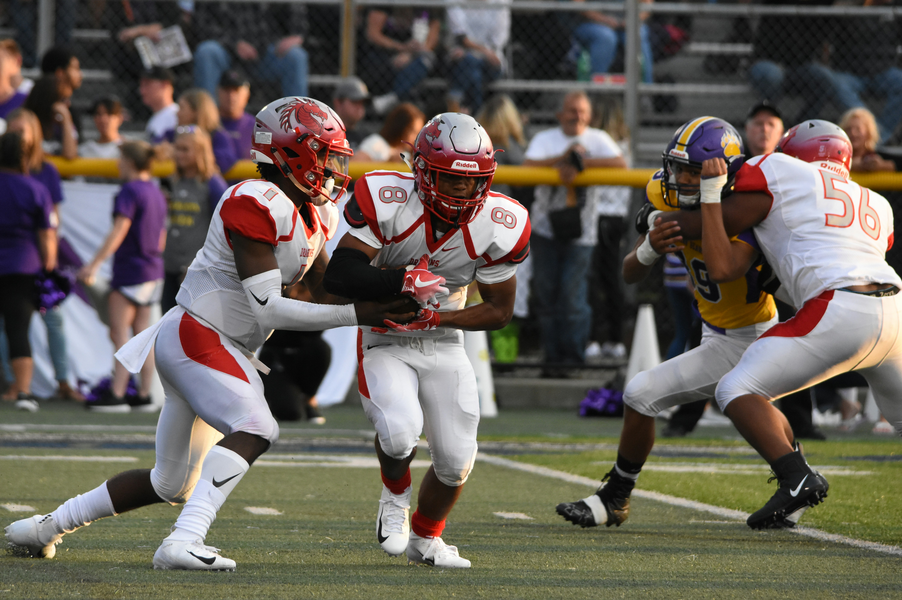

Signings
Trades
Cuts


Anytime a team signs a free agent, trades for a player, or cuts someone on their roster, it's more than just an act. There is always an underlying reason for these moves to be made, and I intend on showing you why this happens.